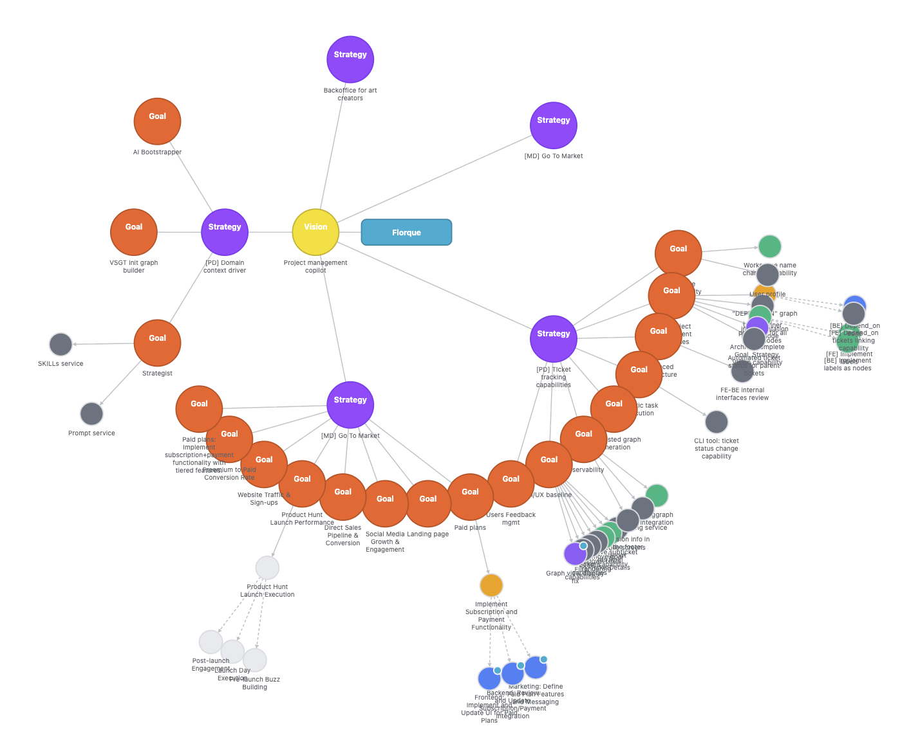
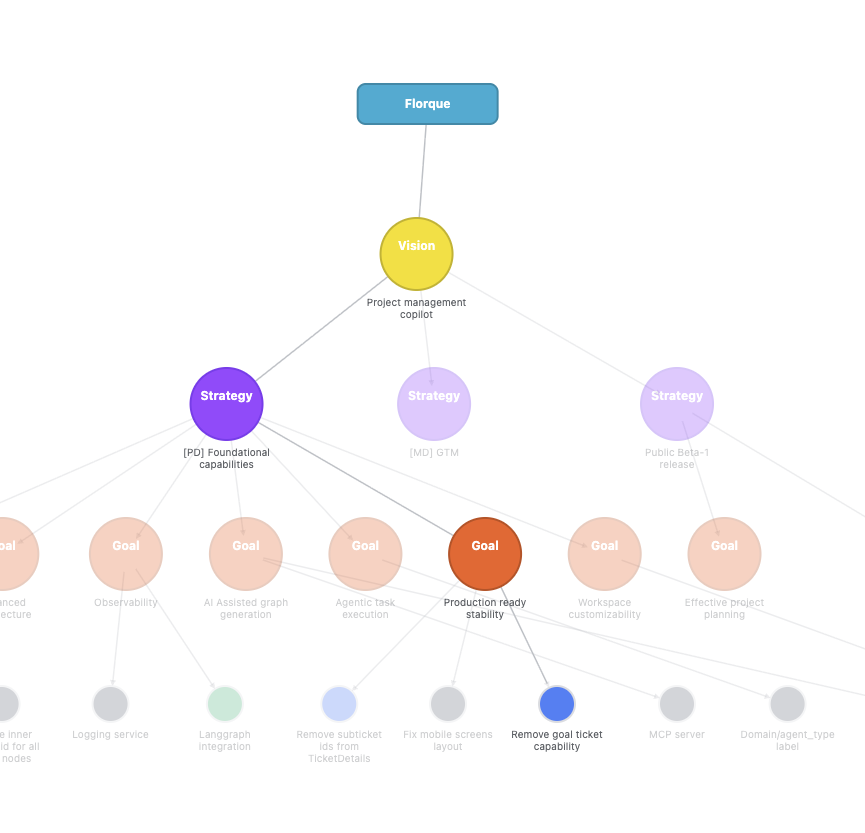
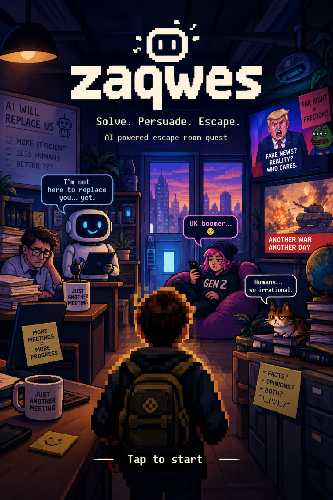
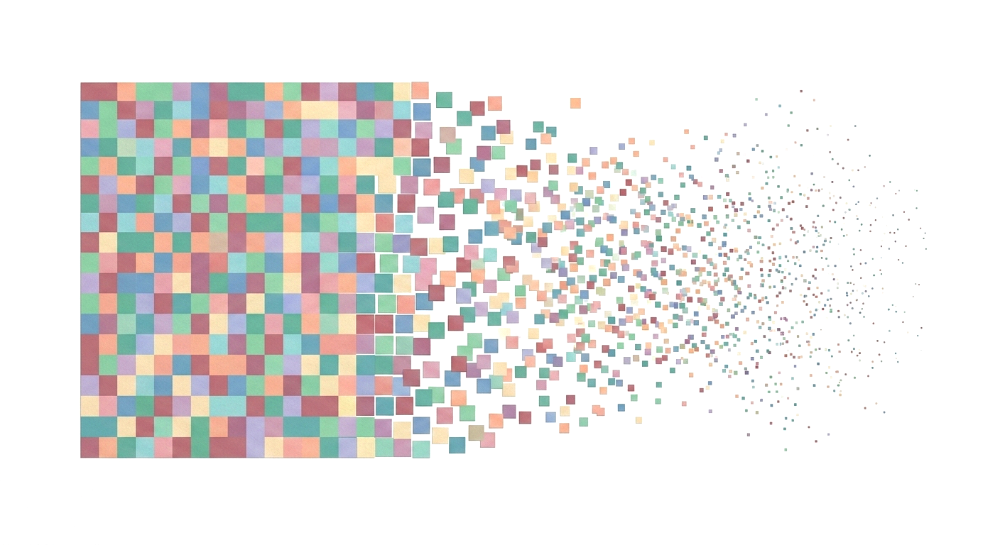

Engineering Autonomous Agents, Living Work Graphs & Emergent Systems.
Florque AI Studio researches novel AI architectures, engineers functional POCs, and publishes living progress in multi-agent orchestration, dynamic workflows, and interactive LLM systems.
Novel AI Research
Exploring uncharted ground in graph-guided agent memory, causal work graphs, and deterministic bounds.
Functional POCs
Moving beyond static toy prompts to production-tested architectures, self-healing loops, and real prototypes.
Public & Living Progress
Transparent development, open frameworks, and a public portfolio demonstrating state-of-the-art orchestration.
Core R&D & Portfolio Projects
Each project tests a foundational thesis in AI agent architecture, adaptive workflows, or interactive logic. Explore live apps, architectural case studies, and prototypes below.
Florque
Full-scale, work graph–based, AI-powered ticket tracking and self-healing execution engine. Automates, monitors, and optimizes project operations for teams.

Florque Lite
Mobile-first AI planning agent. Transforms raw ideas into actionable, resource-constrained execution plans and dynamically adapts the roadmap based on new inputs.

Zaqwes
AI-powered escape room quiz game where non-player characters (NPCs) leverage LLM backends for emergent, unpredictable, and dynamic gameplay logic.

New R&D Works in the Lab
Florque AI Studio regularly publishes new experimental projects in multi-agent swarms, self-evolving code graphs, and autonomous tools.
Core Innovation & System Architecture
The recurring architectural paradigms that power all Florque AI Studio systems.
Graph-Native Context
Moving past flat lists. Representing work as causal DAGs so agents preserve the strategic lineage behind every action.
Agent Orchestration
Spawning specialized, autonomous AI experts that collaborate, monitor drift, and execute with self-healing feedback loops.
Constraint Solvers
Planning systems bounded by real-world human hours, capacity, and deadlines instead of unrealistic infinite backlogs.
Emergent Game Loops
Hybrid engines blending deterministic physics, rules, and timers with generative LLM psychology and dialogue.
The Florque Work Graph Framework
We don't keep our discoveries behind walled gardens. Our open-source Work Graph framework establishes a standardized protocol for connecting high-level vision down to autonomous agent ticket execution.

Partner with Florque
Need bespoke multi-agent architecture, custom LLM tool-calling engines, or adaptive work graph pipelines? We selectively contract and partner with founders, engineering teams, and organizations building at the edge of autonomy.